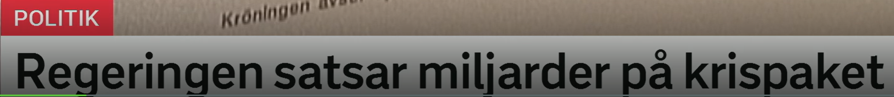
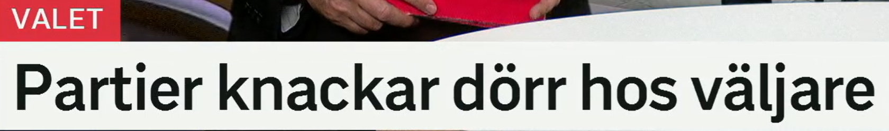
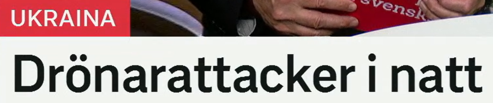
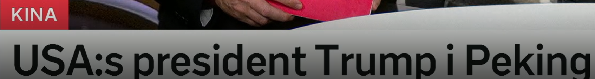
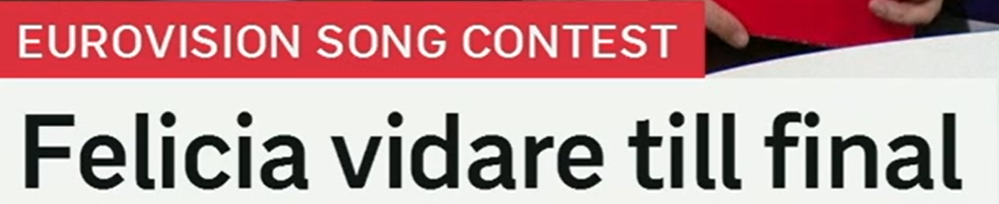

Regeringen satsar miljarder på krispaket
政府投入数十亿用于危机方案。
来自 en regering，政府；相关词：regera 统治、执政，regeringsparti 执政党，regeringsbeslut 政府决定。
Regeringen presenterar en ny budget. 政府公布新预算。
satsa 是“投入、押注、重点发展”。搭配很常见：satsa pengar på 投钱在……上，satsa stort 大力投入。
Kommunen satsar på skolan. 市政府重点投入学校。
en miljard 是十亿；复数 miljarder。对比：en miljon 一百万，en biljon 一万亿。
Projektet kostar flera miljarder kronor. 这个项目花费数十亿克朗。
kris 危机 + paket 方案、包。类似新闻词：stödpaket 支持方案，åtgärdspaket 措施包，sparpaket 紧缩方案。
Företagen vill se ett nytt stödpaket. 企业希望看到新的支持方案。
标题句型
A satsar X på Y = A 把 X 投入到 Y 上。新闻里常把金额放在动词后：satsar miljarder på...

Partier knackar dörr hos väljare
各政党到选民家敲门拉票。
ett parti 政党；也可指“一局比赛、一批货”。政治词族：partiledare 党魁，oppositionsparti 反对党，småparti 小党。
Flera partier vill ändra lagen. 多个政党想修改法律。
字面是“敲门”，政治语境中指上门拜访选民。knacka på 是“敲……”，如 knacka på dörren。
Kandidaterna knackar dörr inför valet. 候选人在选举前上门拉票。
表示“在某人处、向某人那里”。例如 hos läkaren 在医生那里，bo hos en vän 住在朋友家。
Jag var hos tandläkaren i morse. 我今天早上去看牙医了。
来自动词 välja 选择、投票选择；词族：val 选举/选择，väljarstöd 选民支持率，rösta 投票。
Unga väljare prioriterar klimatfrågan. 年轻选民优先关注气候议题。
标题句型
knacka dörr hos väljare 是瑞典政治报道里的高频搭配，可以整体记作“上门接触选民”。

Drönarattacker i natt
夜间发生无人机袭击。
en drönare 无人机 + en attack 袭击。瑞典语复合时常去掉或调整词尾：drönare 变成 drönar-。
Staden utsattes för drönarattacker. 这座城市遭到无人机袭击。
名词是 en attack，动词是 attackera。相关词：flyganfall 空袭，angrepp 攻击，försvar 防御。
Myndigheterna bekräftar attacken. 当局确认了袭击。
表示“昨夜/今夜”，具体看说话时间。对比：i morse 今天早上，i går kväll 昨晚，i kväll 今晚。
Det regnade kraftigt i natt. 昨夜雨下得很大。
新闻标题省略
完整句子可能是：Det skedde drönarattacker i natt. 标题常省略 det skedde、har skett 这类“发生了”。

USA:s president Trump i Peking
美国总统特朗普在北京。
瑞典语用 -s 表示“……的”。缩写后常写冒号：EU:s regler 欧盟的规则，FN:s generalsekreterare 联合国秘书长。
USA:s ekonomi påverkar världen. 美国经济影响世界。
en president 总统；相关词：presidentval 总统选举，vicepresident 副总统，statschef 国家元首。
Presidenten håller ett tal. 总统发表讲话。
城市前通常用 i：i Stockholm，i Shanghai。中文城市名的瑞典语传统写法：北京 Peking，广州 Kanton。
Mötet äger rum i Peking. 会议在北京举行。
名词所有格
USA:s president = 美国的总统。遇到缩写名词时，记住“缩写 + 冒号 + s”。

Felicia vidare till final
Felicia 晋级决赛。
基本义是“继续、向前、进一步”。比赛语境中 gå vidare = 晋级。其他搭配：läsa vidare 继续深造，skicka vidare 转发。
Laget gick vidare efter segern. 球队获胜后晋级。
till 表示去向、目标；en final 决赛。常见组合：till semifinal 进半决赛，till nästa omgång 进下一轮。
Artisten tog sig till final. 这位艺人进入决赛。
体育、音乐比赛都可用。词族：finalist 决赛选手，semifinal 半决赛，finalplats 决赛席位。
Hon säkrade en finalplats. 她锁定了一个决赛名额。
标题省略动词
完整句可说：Felicia går vidare till final. 标题中常省掉 går，只保留结果。
复习表：从一个词扩到一组词
| 标题关键词 | 扩展词汇 | 记忆角度 |
|---|---|---|
| satsa på | satsning, storsatsa, investera i, lägga pengar på | 投入资源、重点发展 |
| val | väljare, välja, rösta, valkampanj, vallokal | 选举与选择同源 |
| attack | attackera, angrepp, anfall, försvar, drönare | 战争新闻高频词族 |
| USA:s | EU:s, FN:s, Sveriges, regeringens | 所有格：谁的 |
| gå vidare | vidare till final, ta sig vidare, finalplats, semifinal | 比赛晋级表达 |
练习 1
把“政府大力投入医疗”译成瑞典语。提示：Regeringen satsar stort på...
练习 2
用 hos 造句：我住在朋友家。提示：Jag bor hos...
练习 3
把“她晋级半决赛”译成瑞典语。提示：Hon går vidare till...